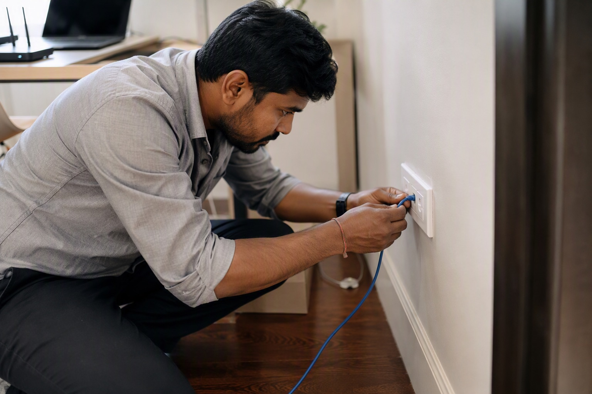

Home Networking Cable Guide: Cat6, Coaxial and What to Lay Before Plastering

Almost every homeowner who skips structured cabling regrets it within two years, usually while looking at a Wi-Fi extender plugged into a corridor socket. Network cable is cheap; running it after plastering is not.
Why wired still matters in a Wi-Fi house
Wi-Fi is a shared radio medium and Indian homes are built of concrete and brick, which is close to worst case for signal. The practical answer is not more powerful Wi-Fi — it is wired backhaul to two or three well-placed access points. That needs Cat6 in the walls, decided before plastering.
Cat6, Cat6a or Cat5e?
| Cable | Speed / distance | Approx price (305m box) | Verdict |
|---|---|---|---|
| Cat5e | 1 Gbps to 100m | ₹3,500 – ₹6,500 | Adequate today, poor future-proofing |
| Cat6 | 1 Gbps to 100m, 10 Gbps to ~55m | ₹6,000 – ₹12,000 | The right default for homes |
| Cat6a | 10 Gbps to 100m | ₹11,000 – ₹22,000 | Worth it only for long runs or a home office |
Insist on solid-conductor pure copper for in-wall runs. Copper-clad aluminium is widely sold, is noticeably cheaper, and fails on longer runs and with power-over-ethernet devices such as cameras and access points.
How many drops, and where
- Two drops behind the TV — TV and set-top box or console.
- One drop per bedroom, near the desk or bedside.
- Two drops at ceiling level in the corridor or living area, for Wi-Fi access points. This is the one most people miss and the one that matters most.
- One drop at the work desk, plus a spare.
- All returning to one central point — a small cabinet or a deep enclosure near the meter or in a utility area, with a power socket in it.
A 2BHK typically needs 6–8 drops and a 3BHK 10–14. At roughly ₹25–45 per metre installed, the whole job is a small fraction of the electrical budget.
Put the router in the right place
The most common Indian networking mistake is the router sitting inside the meter cupboard by the front door, because that is where the fibre arrives. Bring the fibre to the cupboard, then run Cat6 from there to a central access point location. A router in a metal cupboard behind a concrete wall is a router working at a fraction of its capability.
Coaxial, CCTV and doorbell cabling
- RG-6 coaxial for cable TV and dish — still worth running one to the TV wall even in a streaming household.
- CCTV — modern IP cameras run on the same Cat6 with power over ethernet, so plan camera positions as network drops rather than separate cabling. Analogue systems still use RG-59 with a power pair.
- Video doorbell / intercom — a Cat6 drop to the main door serves almost every current system.
- Keep data cable separated from power cable — a parallel run alongside mains in the same conduit induces noise. Cross at right angles where they must meet, and use separate conduit.
Terminate properly
Use keystone jacks in modular plates at the room end and a patch panel at the central point, rather than crimping plugs directly onto solid cable. Solid conductor is designed to be punched down, not crimped, and directly crimped plugs on solid cable are the single most common cause of intermittent home network faults.
See the full range on our internet and networking page.
Send your list on WhatsApp for an exact quote within 60 minutes. Approximate ranges on this page are for planning; WhatsApp 88676 76700 for today's firm rate, with no pressure to buy.
Frequently asked questions
Should I use Cat6 or Cat6a cable at home?
How many network points does a house need?
What is copper-clad aluminium LAN cable?
Where should the router be placed in a house?
Can network cable run in the same conduit as power cable?
How much does home networking cable cost in Bangalore?
Ready to order for your home?
Upload your wiring list for an instant quote — 100% original material, free next-day delivery across Bangalore.